現場レポート
2026年10月
スプリンクラーバルブ下部の滲み発見から修繕完了まで、現場対応の実例
定期点検中にスプリンクラー制御バルブ下部から微量な滲みを確認し、早期修繕に至った現場事例です。滲みの原因はパッキン劣化によるものでしたが、放置すれば大規模な漏水事故につながる可能性がありました。発見から部品調達・修繕完了まで3日で完結した迅速対応のプロセスを紹介します。
消防設備点検・設備保守に関する情報を発信しています
2026年10月
定期点検中にスプリンクラー制御バルブ下部から微量な滲みを確認し、早期修繕に至った現場事例です。滲みの原因はパッキン劣化によるものでしたが、放置すれば大規模な漏水事故につながる可能性がありました。発見から部品調達・修繕完了まで3日で完結した迅速対応のプロセスを紹介します。
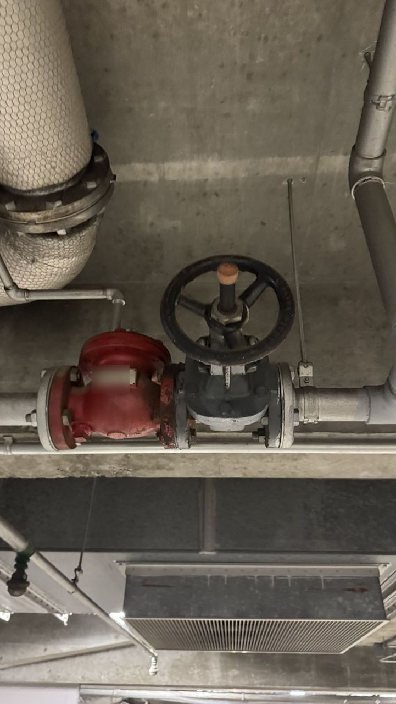
2026年7月
スプリンクラー配管に設置される逆止弁（チェックバルブ）は、水の逆流防止とシステム全体の圧力管理に重要な役割を担っています。劣化が進むと閉鎖不良による配管内の圧力損失・漏水につながり、警報バルブの誤作動を引き起こすことがあります。
点検時には弁体の動作確認・パッキンの劣化・配管接続部の錆の有無をセットで確認し、経年した弁は、状態に応じて予防交換を検討してください。
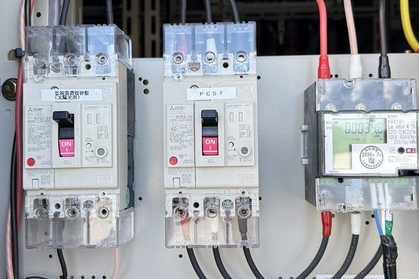
2026年7月
太陽光発電システムに付随する分電盤・接続箱は、経年による絶縁抵抗の低下や端子台の腐食が発電効率の低下と地絡リスクにつながります。経年した設備ほど、絶縁抵抗値の定期測定が欠かせません。
測定値が電気設備技術基準で定める値（使用電圧に応じて0.1〜0.4MΩ）を下回る回路は、原因の調査と改修が必要です。
異常なく見える外観でも数値による客観的な判定が重要です。

2026年7月
太陽光発電と組み合わせた蓄電池システムは、使用年数や充放電の回数に応じて容量が少しずつ低下し、停電時のバックアップ能力が落ちていきます。「満充電にならない」「停電時に早期に電源が落ちる」といった症状が更新サインです。
劣化診断には充放電サイクルデータの解析と専用テスターによる容量測定が有効で、早期の更新判断が安全確保とコスト最適化につながります。

2026年7月
屋上や建物外壁に設置される消火器ボックスは、紫外線・雨水・排気ガスにさらされ続けるため、内部の消火器本体より先にボックス自体が劣化するケースがあります。特に扉の開閉不良・ロック機構の腐食・標識の退色が現場で多く確認される不具合です。
半年ごとの機器点検に合わせてボックスの外観・構造を確認し、経年劣化が著しいものは早期更新を検討することが管理品質の向上につながります。
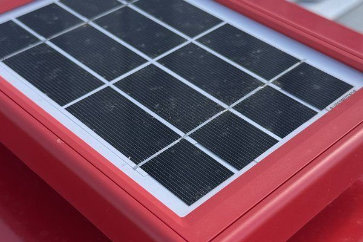
2026年6月
屋上に太陽光パネルを後付け設置した建物では、消火器・消火設備の設置位置が変わり、既存の消防設備との整合性が損なわれるケースがあります。パネル設置後に消火器ボックスへのアクセスが遮られていないか、また延焼リスクの変化に対応した設備レイアウトの見直しが行われているかを確認することが重要です。
改修時には消防署への届け出が必要な場合もあるため、設備保守担当と連携した管理体制の構築をお勧めします。
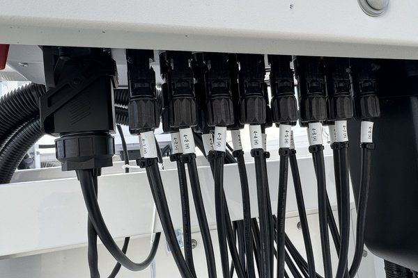
2026年6月
太陽光発電システムのパワーコンディショナー（PCS）は、ケーブル接続部の緩みや絶縁不良が発電量低下や火災リスクにつながります。現場では端子の変色・焦げ・コネクタの嵌合不足が多く確認されており、経年した設備では、増締めと絶縁抵抗測定をセットで行う点検が有効です。
管理会社として年次点検の際にPCS周辺を重点確認する体制を整えることで、重大トラブルの未然防止につながります。

2026年6月
地下駐車場や屋外タンク付近に設置される移動式粉末消火設備は、ホースの劣化・薬剤の固結・圧力ゲージの故障が代表的な不具合です。消防法上は6か月ごとの機器点検と1年ごとの総合点検が義務付けられており、薬剤の充填や耐圧試験が必要になる場合があります。
古い設備は部品の調達が難しくなる場合もあるため、点検時に担当業者へ更新時期の相談をすることをお勧めします。
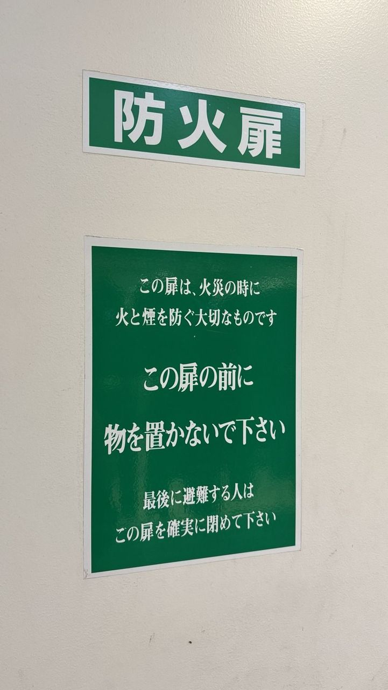
2026年6月
防火扉は火災時に延焼を防ぐ重要な設備ですが、扉本体の変形・ヒンジの固着・自動閉鎖装置の動作不良が、代表的な不具合です。また「防火設備」の法定標識が剥落・退色していると消防検査で指摘される事例もあります。
点検では扉の閉鎖確認だけでなく、ラッチの掛かり具合と煙感知器連動の動作テストを必ず実施することをお勧めします。

2026年6月
誘導灯に内蔵された蓄電池は、4〜6年が交換の目安とされており（一般社団法人日本照明工業会）、法定点検でも点灯の切り替え試験を行います。停電時に誘導灯が点灯しないと避難の妨げになるだけでなく、消防設備の不備として指摘の対象になります。
交換費用は器具規模によって異なりますが、蓄電池のみの交換と器具ごとの更新ではコスト差が大きいため、経年数と残存容量に応じた判断が重要です。
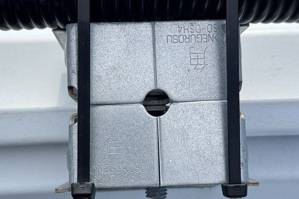
2026年6月
電気系統の配線を支えるケーブルダクトや支持金具は、経年により腐食やひび割れが進行し、電線の保護機能が低下します。特にビルの屋上や地下設備室など、湿気や温度変化にさらされる環境では劣化が早く、目視点検では見えにくい内部の変形も見逃せません。
定期点検では金具の締め付けトルク確認と錆の進行度評価をセットで実施し、早期交換を検討することが大切です。

2026年6月
駐車場や機械室に設置される泡消火設備は、ヘッドの目詰まり・泡消火薬剤の劣化・バルブ類の固着が代表的な不具合です。
特に長期間作動しない設備ほど内部の腐食や薬剤の劣化が進行しており、点検時には薬剤サンプリングと流量確認を必ずセットで実施することが重要です。
誤作動時の泡剤漏洩は清掃コストが高額になるため、防液堤や排水溝の状態も合わせて確認することをお勧めします。

2026年6月
屋上設置のキュービクルは降雨・結露・直射日光にさらされるため、室内設置に比べて外壁の腐食・パッキンの劣化・排水口の詰まりが発生しやすい環境です。
梅雨・台風シーズン後は特に雨水浸入のリスクが高く、早期発見のために扉の密閉性と基盤部への錆の有無を重点的に確認する必要があります。
定期的な防錆塗装と気密処理を組み合わせることで、重大な電気事故を未然に防ぐことができます。
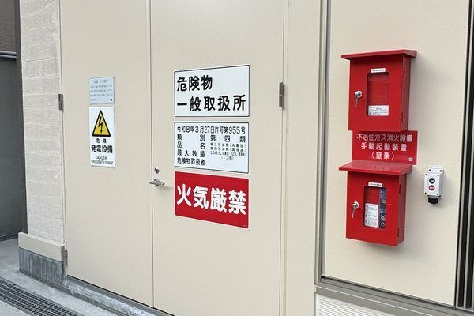
2026年6月
消防用の非常電源である非常用発電機は、年1回の総合点検で、負荷運転（定格出力の30%以上）または内部観察などによる確認が必要です。
予防的な保全策を講じている場合は、負荷運転などの周期を6年に1回にできます（2018年の点検基準改正）。
運転中は燃料残量・冷却水温・排気の色や量を確認し、結果を点検票に記録して保管してください。
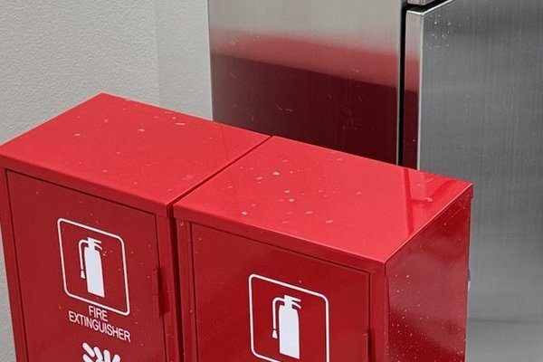
2026年6月
連結送水管は竣工後または設置後10年が経過したものは3年ごとの耐圧試験が必要です。
試験の日程は、建物の利用者への周知と合わせて早めに調整してください。
日常の確認では、放水口の扉の開閉・キャップの有無・周囲に物が置かれていないかを見ておくと安心です。
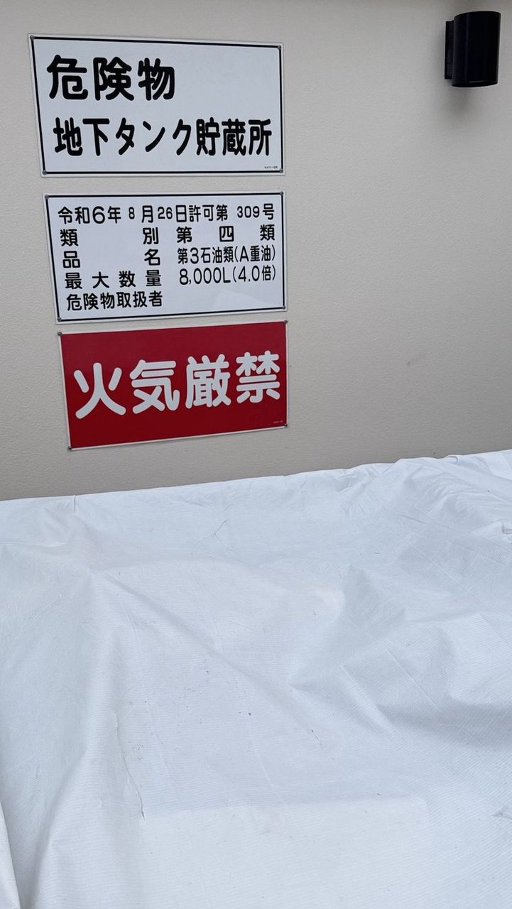
2026年6月
消防法では、危険物を貯蔵・取り扱う施設に対して標識・掲示板の設置が義務付けられています。
文字の褪色・錆・破損は法令違反となるリスクがあり、点検時に見落とされがちな項目です。
①掲示内容（品名・数量・注意事項）の最新情報との一致確認、
②設置位置の視認性と固定状態の確認、
③素材の腐食・変形・文字の視認性低下の目視点検、この3点を定期確認のルーティンに加えることで、行政指導リスクを未然に防ぎます。
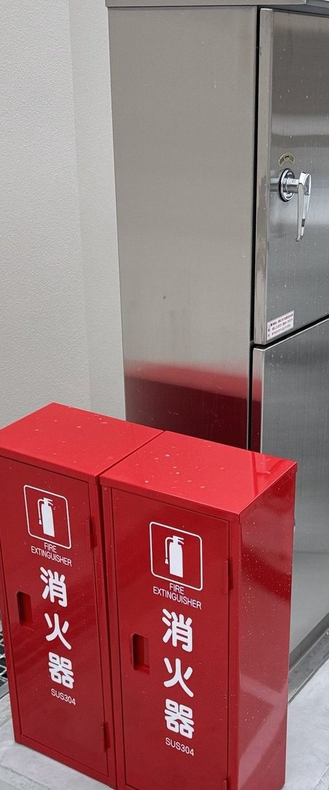
2026年6月
地下ピットや地下機械室は、湿気・結露・浸水の影響を受けやすく、設備機器の腐食や電気系統のショートにつながるリスクがあります。
①排水ピットおよびポンプの動作確認と水位センサーの点検、
②外壁・床面の亀裂・染み出しの目視点検と補修履歴の確認、
③換気ファンの動作確認と湿度計の計測値記録が重要です。
梅雨・台風シーズン前の集中点検が、設備の長寿命化と緊急対応コスト削減に直結します。

2026年6月
マンション・ビルに設置される灯油・重油の危険物タンクは消防法に基づく点検義務があります。
①漏洩検知装置の動作確認と貯蔵量の届出状況の確認、
②防油堤（流出防止設備）の損傷・亀裂の目視点検、
③給油バルブ周辺の油染みや配管腐食の有無の確認が重要です。
点検を怠ると火災リスクだけでなく、消防署からの改善命令にもつながるため、年間スケジュールへの組み込みが不可欠です。

2026年6月
発電機や空調機を収納する機械室は、設備性能の維持に適切な環境管理が欠かせません。
①換気口フィルターの詰まりは設備の過熱・故障リスクを高めるため定期的な清掃が必要、
②室内の湿気対策（除湿・排水路確認）を怠ると腐食や電気トラブルの原因に、
③照明器具の球切れは点検作業者の安全に直結するため予防交換のスケジュール化が重要です。
小さな管理の積み重ねが設備の長寿命化につながります。

2026年6月
電気室・サーバー室などに設置されるガス系消火設備は、誤作動時の酸素欠乏リスクがあるため点検精度が特に重要です。
①起動回路の遮断弁と安全ピンの状態確認、
②ガス量の重量測定（貯蔵容器の圧力低下は即時交換が必要）、
③手動起動装置と自動起動の切替スイッチが適切な位置にあるかの3点を定期的にチェックすることで、誤作動・不作動どちらのリスクも低減できます。
設備の特性上、点検は必ず有資格者が実施し、結果を書面で保管してください。

2026年5月
地下に設置された消火ポンプや貯水槽は目視確認が難しく、劣化に気づきにくいのが課題です。
①ポンプの自動起動試験（圧力スイッチの感度ずれは不作動の原因）、
②呼水槽の水位と逆止弁の動作確認、
③配管の錆・腐食チェック（特に貯水槽接続部は腐食が進行しやすい）の3点を、半年ごとの機器点検に合わせて確認することが基本です。
現場では「ポンプが動いているように見えて実は吐出圧が低下していた」というケースも多く、数値による確認が欠かせません。
空調・換気設備の定期点検とフィルター交換、管理会社が見落としがちな3つの盲点
株式会社上田 ｜ コラム2026年5月
共用部の空調・換気設備はフィルター詰まりによる効率低下が起きやすく、定期的な清掃と交換が欠かせません。
冷媒ガスの漏れ確認や室外機周辺の障害物チェックも年2回を目安に実施することで、夏冬シーズン前の突発故障を防ぐことができます。
フィルターの清掃周期は、利用状況とメーカーの取扱説明書に合わせて決めてください。
エレベーターの定期点検で管理者が確認すべき3つの安全ポイント
株式会社上田 ｜ コラム2026年5月
エレベーターは毎日多くの入居者が利用する重要設備です。
建築基準法第12条に基づく年1回の定期検査に加え、保守契約に基づく定期保守でドア開閉の異常・異音・非常通話装置の動作を確認することが、閉じ込め事故の予防につながります。
管理会社は点検記録の保管と保守会社との定期報告体制を整えておくことが重要です。
防火シャッターの定期点検で見落としがちな3つの安全確認ポイント
株式会社上田 ｜ コラム2026年5月
防火シャッターは建築基準法の防火設備で、年1回の防火設備定期検査の対象です。
作動不良は延焼拡大の直接原因になります。
定期点検で特に確認すべき3項目は
①煙感知器との連動動作確認（感知器作動時に正常に降下・閉鎖するかテスト実施）
②降下経路上の障害物確認（シャッター直下や降下範囲内に物品が置かれていないか定期パトロール）
③スラット・ガイドレールの変形と潤滑状態確認（浮きや歪み、固着は緊急時の動作不良につながる）。
設備台帳の事前整備が点検品質を左右します。
設備保守コストの「見える化」から始める削減策――管理会社が実践する3ステップ
株式会社上田 ｜ コラム2026年5月
設備保守コストの削減は「とりあえず値下げ交渉」から入ると失敗します。
まず年間費用を「法定点検費」「予防保守費」「緊急修理費」の3区分で集計しコスト全体を可視化することが第一ステップです。
次に設備別の単価と対応範囲を比較し、重複発注や割高な緊急対応がないかを検証します。
最後に複数設備を一括委託することで段取りコストを削減し、管理会社の窓口業務も効率化できます。
誘導灯・非常口表示灯の定期点検で管理者が押さえるべき3つのポイント
株式会社上田 ｜ コラム2026年5月
誘導灯・非常口表示灯は停電時の避難誘導に不可欠な設備で、消防法により6か月ごとの機器点検と1年ごとの総合点検が義務付けられています。
点検の3ポイントは
①ランプ・バッテリーの動作確認（非常時に規定時間〈一般に20分、大規模な建物などは60分〉以上点灯するか切り替え試験を実施し、バッテリー劣化は早めの交換が必要）
②表示面の劣化・変色チェック（経年で表示面が黄ばむと視認性が低下し、照度基準を下回ると不適合となる）
③配置・向きの適切性確認（間仕切り変更や什器配置換えで死角が生じていないか、避難経路全体で再確認することが重要）。
機械式駐車場の定期点検で見落としがちな安全確認ポイント
株式会社上田 ｜ コラム2026年5月
機械式駐車場（立体・地下・タワー式）は可動部が多いため、メーカーや保守会社の基準に沿った定期点検が欠かせません。
点検の重要ポイントは
①安全装置の動作確認（障害物検知センサー・非常停止ボタン・インターロックが正常に機能するか実機テストで確認）
②チェーン・ワイヤーロープの伸びと摩耗（切れ残りが生じる前に交換基準値と照合し、給油状態も同時確認）
③パレット・昇降路の変形・腐食チェック（地下式は湿気による腐食が進みやすく、床面の水はけ状況と合わせて評価する）。
非常用発電機の定期点検で管理者が押さえるべき3つのポイント
株式会社上田 ｜ コラム2026年5月
非常用発電機は停電時に消防設備・避難誘導灯・エレベーターを継続動作させる重要な設備で、消防法に基づく点検では、年1回の総合点検で負荷運転または内部観察などによる確認が必要です。
点検で特に重要な3項目は
①エンジン始動試験（自動・手動双方の始動を確認し、規定電圧・周波数に達するまでの時間を記録する）
②冷却水・潤滑油の劣化確認（冷却水の錆・油脂汚染や潤滑油の粘度低下は内部損傷の前兆で、交換サイクルの厳守が重要）
③燃料（軽油）の劣化と在庫量確認（長期保管で酸化した軽油は噴射ノズルを詰まらせるリスクがあり、購入後1年以上経過した燃料は入れ替えが推奨される）。
負荷試験は専門業者との計画的な連携が必要です。
排煙設備（防煙ダンパー・排煙口）の定期点検で確認すべき3つのポイント
株式会社上田 ｜ コラム2026年5月
排煙設備は火災時の煙を屋外へ排出して避難経路を確保するための重要な消防・建築設備で、建築基準法の定期検査や消防法の点検の対象になります。
点検で特に重要な3項目は
①防煙ダンパー（FD・SFD）の開閉動作確認（手動・自動双方の作動を確認し、閉鎖後の気密性が確保されているかを実測で確かめる）
②排煙口・排煙機の風量測定（排煙口の開放操作と排煙機の起動を連動させて確認し、設計どおりの風量が確保できているかを測定する）
③連動制御盤の表示・予備電源確認（ダンパー動作信号が制御盤に正常に伝達されているか確認し、予備電源への自動切換えを試験する）。
経年したダンパーは腐食による固着が起きやすく、状態に応じて交換を検討してください。

2026年5月
マンション・施設の給排水設備は日常的に使用される一方、異常が顕在化しにくい部位です。
①ポンプ・加圧給水装置の動作確認（起動・停止時の異音や圧力計の数値推移は初期不具合の早期発見につながる）
②露出配管の腐食状態確認（屋外や地下部の配管は結露・酸化による腐食が進みやすく、塗膜の浮きや錆汁の滲みが交換サインとなる）
③排水桝・トラップの詰まり点検（バイオフィルムや異物堆積は下水臭・逆流の原因となり、目視点検と定期清掃が重要）。
給排水設備は電気・消防設備と異なり法定点検の頻度が少なく自主管理が重要で、突発故障のリスクを下げるために年1〜2回の定期巡回が推奨されます。

2026年5月
高圧受変電設備（キュービクル）は年1回の法定点検が義務ですが、点検間の自主確認も停電リスクを下げるうえで重要です。
①変圧器・開閉器の絶縁劣化確認（変圧器の異臭・騒音・外装の変色は内部劣化のサインで、長期間使用している場合は計画的な更新の検討が必要）
②接続部の腐食・締め付け緩み（屋外設置では雨水・結露による端子腐食が接触抵抗増大を招き、過熱や停電の原因となる）
③避雷器・電力ヒューズの状態（落雷が多い地域では避雷器の動作カウンターの確認と外観点検を実施し、限流ヒューズは規定値以上の溶断で即交換が必要）。
キュービクルの突発停電はテナント・居住者に大きな影響を与えるため、停電を伴う年次点検は保安法人との計画的な連携が推奨されます。
宅配BOXの高齢入居者向け使い方サポートと管理会社の対応実例
株式会社上田 ｜ コラム2026年11月
スマートロック式・QRコード式の宅配BOXは高齢入居者から「操作が難しい」と相談が入るケースが増えています。管理会社が用意した大判の操作手順ポスターやモデルルームでの体験会を通じて、苦情件数を半減させた事例を紹介します。初期設定時の丁寧な案内が入居満足度向上の鍵です。
コインランドリー洗濯乾燥一体型機の保守点検と部品調達の実践ガイド
株式会社上田 ｜ コラム2026年11月
洗濯乾燥一体型機は排水フィルター・ドラムベルト・ヒーターユニットの消耗が早く、適切な保守サイクルの設定が収益安定化の要になります。メーカー廃番部品の代替品確保や保守委託先との部品在庫共有契約を締結することで、故障時のダウンタイムを最小化できます。年2回の定期分解清掃を軸に保守計画を立てることをお勧めします。
EV充電器の充電ケーブル・コネクタ劣化診断と交換判断の3つの基準
株式会社上田 ｜ コラム2026年11月
充電ケーブルは屋外での紫外線・温度変化・接続繰り返しにより被覆ひび割れやコネクタ接触不良が生じます。
①被覆の亀裂や変色、
②接続時の異音・発熱、
③充電ログの接続エラー頻度—これら3点を確認することで交換時期を見極められます。放置すると充電不能だけでなく感電リスクも生じるため、異常発見後は速やかに専門業者へ相談してください。
消防設備点検票の適正保管と記録改ざん防止、管理会社が押さえる法的義務
株式会社上田 ｜ コラム2026年11月
消防法では点検結果報告書を消防署に提出後も3年間の保管が義務付けられており、原本の改ざんや紛失は行政指導の対象になります。電子保管を導入する場合は消防庁通知に沿ったタイムスタンプ付与と改ざん防止措置が必要です。紙・電子を問わず「いつでも提示できる状態」を維持することが管理会社の法的責任です。
受水槽清掃後の水質検査手順と管理者が確認すべき検査基準値
株式会社上田 ｜ コラム2026年11月
受水槽の清掃完了後は必ず水質検査を実施し、残留塩素・濁度・大腸菌群の3項目が基準値を満たすことを確認してから通水を再開します。残留塩素は0.1mg/L以上、濁度は2度以下が目安です。検査結果記録は建築物衛生法に基づく台帳に添付し、次回清掃時に業者が参照できるよう整理しておくことが重要です。
コインランドリー店舗閉店・機器撤去時の原状回復費用と手続きの目安
株式会社上田 ｜ コラム2026年11月
コインランドリー閉店時の原状回復では、機器撤去・給排水配管の閉止・電気引込の復旧・床面補修が主な工事項目となります。機器台数や配管延長によりますが、標準的な10台規模の店舗では原状回復費用として150〜300万円程度が目安です。撤去業者選定は廃棄物処理許可の有無と産業廃棄物マニフェストの適正発行を必ず確認してください。
設備保守の「ワンストップ対応窓口」を活用して管理業務を効率化した3社の事例
株式会社上田 ｜ コラム2026年11月
消防・電気・給排水・EV充電器など複数設備の保守委託先を一本化したことで、緊急時の連絡先が1か所になり対応時間が平均40分短縮された管理会社の事例を紹介します。窓口一本化により定期点検の日程調整や報告書の収集・管理も大幅に簡素化され、担当者の残業時間削減にも貢献しました。複数拠点を管理する会社ほどその効果が顕著です。
EV充電器の停電時対応と非常用電源システムとの連携確認ポイント
株式会社上田 ｜ コラム2026年11月
マンション共用部の停電発生時、EV充電器は一般的に自動停止しますが、復電後の自動再起動設定や非常用発電機との系統接続の有無によって挙動が異なります。管理者は設置業者から「停電時の動作モード」と「非常系統への接続状況」を書面で確認し、停電復旧後の点検手順を運用マニュアルに組み込んでおくことが重要です。
宅配BOXのIoT遠隔監視で空き確認・故障通知を自動化した管理効率化事例
株式会社上田 ｜ コラム2026年11月
IoT連携型宅配BOXを導入した管理会社では、満杯アラートと扉開閉エラーの即時メール通知により現地確認の出動回数が月10回以上削減されました。管理スタッフがリモートでBOX状態を確認できるダッシュボードの活用により、入居者からの「BOXが使えない」という問合せへの初動対応時間も大幅に短縮されています。
消火設備点検業者の選定で確認すべき3つの資格・実績・保険のポイント
株式会社上田 ｜ コラム2026年11月
消火設備の点検は消防設備士の有資格者が担当することが義務付けられており、業者選定時は「甲種・乙種の種別と対応設備」を必ず確認します。加えて
①類似建物での実績件数、
②点検中の事故に対応する損害賠償保険の補償額、
③点検報告書の提出形式と保管サポートの3点を書面で確認することで、発注後のトラブルを防げます。
雷害対策と避雷設備の点検、管理会社が押さえるべき基礎知識
株式会社上田 ｜ コラム2026年11月
落雷時にアース不良や避雷針の劣化があると、電気設備の損傷や火災リスクが高まります。建物の避雷設備は3年ごとの法定点検が義務付けられており、接地抵抗値・接続部の腐食・導線の断線などを定期的に確認することが重要です。管理会社は竣工図書で設置状況を把握し、台風シーズン前に保守業者への確認依頼を検討してください。
マンション屋上防水層の劣化を見抜く定期目視点検の実践ポイント
株式会社上田 ｜ コラム2026年11月
屋上防水層の劣化は下階への雨漏りとして顕在化することが多く、発見が遅れると改修費用が大幅に増加します。点検では防水シートの膨れ・亀裂・ドレイン周辺の詰まり・立ち上がり部のひび割れを目視で確認し、記録写真とともに管理台帳に残すことが重要です。定期的な早期介入により防水改修サイクルを延ばせた事例は多く、10〜15年を目安に改修計画を策定することをお勧めします。
コインランドリー機器の振動・騒音問題、防振架台と設置場所で差がつく対処法
株式会社上田 ｜ コラム2026年11月
コインランドリー店舗では高速脱水運転時の振動が床・壁を伝わり、隣接テナントや上下階の入居者からの苦情につながることがあります。防振架台の設置や防音マットの敷設が有効であり、コンクリートスラブとの固定方法の見直しで振動伝播を大幅に軽減できた事例があります。機器更新時には製品の騒音・振動スペックを比較し、設置環境に合わせた機種選定が長期的なクレーム防止につながります。

2026年11月
消防法では建物の用途によって「特定防火対象物」と「非特定防火対象物」に区分され、消防設備の点検頻度や報告義務が異なります。特定防火対象物（病院・学校・百貨店など）は機器点検6ヶ月ごと・総合点検年1回・消防署への報告も年1回が義務で、管理負担が大きくなります。担当物件の区分を確認し、年間保守スケジュールへ正確に反映させることが法令遵守の第一歩です。
宅配BOXの通信回線障害時の管理者対応手順と予防措置
株式会社上田 ｜ コラム2026年11月
ネットワーク型宅配BOXは通信回線（LAN・LTE/3G）が切断されると開錠コードの発行や通知機能が停止し、入居者からの問い合わせが急増します。回線障害時は製品メーカーのサポート窓口へ速やかに連絡し、手動解除手順（非常コード等）を把握しておくことが重要です。入居者への周知メッセージを事前にテンプレート化しておき、障害発生から30分以内に掲示板・管理アプリで状況を発信できる体制を整えておきましょう。
EV充電器の充電待ち渋滞を防ぐ「コネクテッドEVCS」の仕組みと管理会社への影響
株式会社上田 ｜ コラム2026年11月
マンション内のEV充電器が複数台設置されている場合でも、利用集中時間帯に充電待ちが発生することがあります。コネクテッドEVCSはスマートフォンアプリ経由で空き状況確認・予約・課金を一元管理し、ピーク時の電力制御（デマンドレスポンス）も備えた機種が増えています。導入時には管理会社が課金・精算データへアクセスできるか、障害発生時のサポート体制についても事前確認をお勧めします。

2026年11月
電気室内の換気が不十分だと夏季の高温によって変圧器・遮断器の絶縁劣化が加速し、停電や火災リスクが高まります。換気扇のフィルター詰まりや外気取り入れ口のシャッター不良は目視点検で発見できますが、見落とされがちな項目です。室内温度・換気回数の記録を保守台帳に残し、40℃超の日が続く夏季は月次で状態確認することを推奨します。
フィールドサービス業務の「作業報告デジタル化」で管理会社の情報共有コストを削減した事例
株式会社上田 ｜ コラム2026年11月
点検作業後の報告書を紙から電子フォームへ移行した管理会社では、提出から管理職確認・顧客共有までの所要時間が平均3日から当日中に短縮された事例が報告されています。写真付き電子報告書はクラウドに自動保存されるため、過去の点検記録検索や顧客へのポータル共有も容易になります。導入コストは初期設定費のみで月次固定費を抑えられるサービスも増えており、小規模管理会社でも導入障壁は下がっています。

2026年11月
建物劣化診断には外壁・屋上・給排水・電気・機械など設備分野ごとの専門調査があり、長期修繕計画の精度向上や修繕積立金の算出根拠として活用されます。コア抜き調査・赤外線サーモ調査・内視鏡調査など手法も多様で、建物築年数や前回修繕からの経過期間に応じて適切な調査を選択することが重要です。管理組合・オーナーへ的確な提案を行うために、管理会社担当者が各診断の概要を把握しておくと信頼向上につながります。
コインランドリー機器のメーカー保証終了後に備える保守契約の選び方と注意点
株式会社上田 ｜ コラム2026年11月
コインランドリー機器のメーカー保証は一般的に設置後1〜3年で終了し、その後は部品交換・修理費用が全額自己負担となります。保証終了前後で「包括保守契約（定額）」か「スポット保守（都度見積もり）」かを比較検討し、稼働台数や機器の築年数に応じた選択が運営コスト最適化につながります。保守契約書には対応時間・駆けつけ保証・消耗品の範囲を明記させることで、緊急時の費用トラブルを未然に防げます。
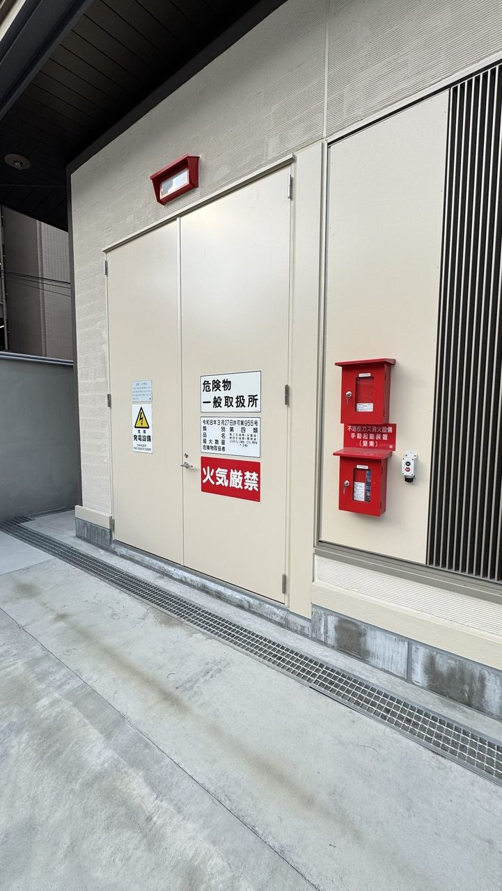
2026年11月
寒波到来時に給水管が凍結・破裂すると、居室内への水損被害や断水が複数フロアに波及します。外壁貫通部や共用廊下の露出配管には保温材の状態確認と巻き直し、水道メーター周辺の保温ボックス設置が有効です。前年実績をもとに11月中旬までに対策リストを点検業者と共有し、入居者への周知通知も合わせて実施することで被害リスクを大幅に抑えられます。
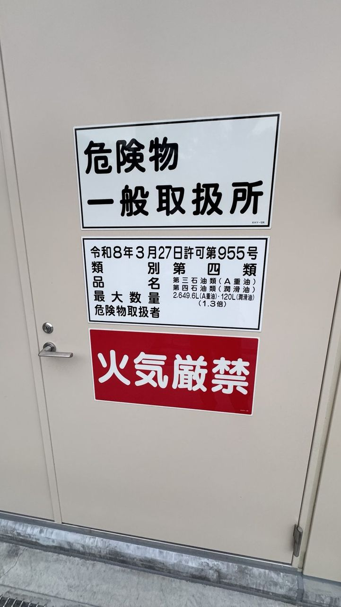
2026年11月
屋内消火栓は年1回以上の総合点検が義務付けられており、
①ポンプ起動・停止の作動確認、
②ホース・ノズルの損傷・腐食の目視点検、
③放水圧力の実測値と基準値との照合が基本の確認項目です。特にホースの折れ癖や格納ボックスの錠前不具合は現場でよく見られる事例で、放置すると火災時に即応できない状態になります。点検記録と改善指示書を保管し、次回点検前に改修完了させる管理サイクルが重要です。

2026年11月
宅配BOXを設置しても「使い方がわからない」という問い合わせが集中すると管理会社の対応コストが跳ね上がります。設置完了後は
①操作手順を写真付きで記載した案内チラシの全戸配布、
②管理組合向け運用規則の策定（長期保管品の撤去手順含む）、
③管理会社コールセンターへの機種固有FAQの共有が初動として有効です。入居者向けの丁寧な案内が定着後の問い合わせ件数を3〜5割減少させる事例も報告されています。
2026年11月
マンション内で複数台のEV充電器が同時使用されると、契約電力を超過してブレーカーが落ちるリスクがあります。ECHONET Lite対応の充電マネジメントシステムを導入すると、デマンド監視値に応じて各ユニットの充電電流を自動制限し、電力超過を防ぐことができます。管理会社が把握しておくべきは「同時充電台数の上限」「ピーク抑制時の充電速度低下」の2点で、入居者への事前説明資料にも明記しておくことでトラブルを予防できます。

2026年11月
コインランドリーの売上は立地と外観の印象に大きく左右されます。看板LED球の切れや外壁の汚れ・剥がれは潜在顧客を遠ざけ、売上低下の一因になります。巡回保守の際に外観チェックリスト（照明点灯確認・ガラス面の清潔度・駐輪場の整理状況・看板の視認性）を追加することで、内部機器点検と外観維持を一体管理できます。年2回の外壁洗浄と看板清掃を保守契約に組み込む事例が増えています。
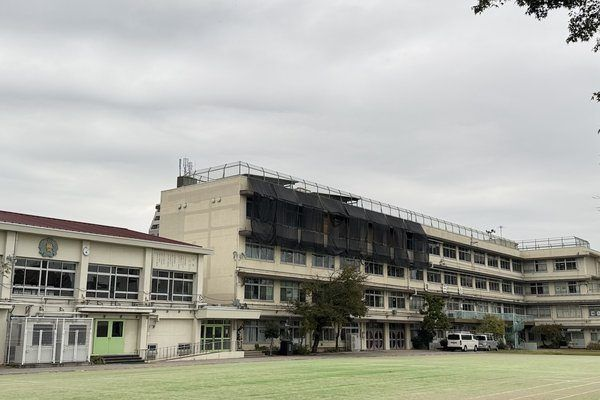
2026年11月
消防法施行規則第3条に基づき、収容人員が50人以上の防火対象物では年2回以上の消防訓練実施が義務付けられています。管理会社の役割は
①消防計画に基づく実施計画書の作成、
②訓練日の消防署への通報（届出義務のある施設の場合）、
③参加者への訓練後アンケートと課題整理です。不参加者向けには書面での手順周知と、次回訓練に向けた連絡体制の更新が重要です。

2026年11月
複数棟を管理する管理会社では、紙の点検票が散在して「どの記録がどこにあるか分からない」状態が常態化しやすいです。クラウド型の設備管理アプリを導入し、点検員がタブレットで現場記録を即時登録する体制に切り替えると、管理事務所での転記作業と過去記録の照合時間が年間で数十時間単位で削減できます。月次報告書の自動生成機能も活用することで、オーナーへの報告品質が向上し信頼関係の強化にもつながります。
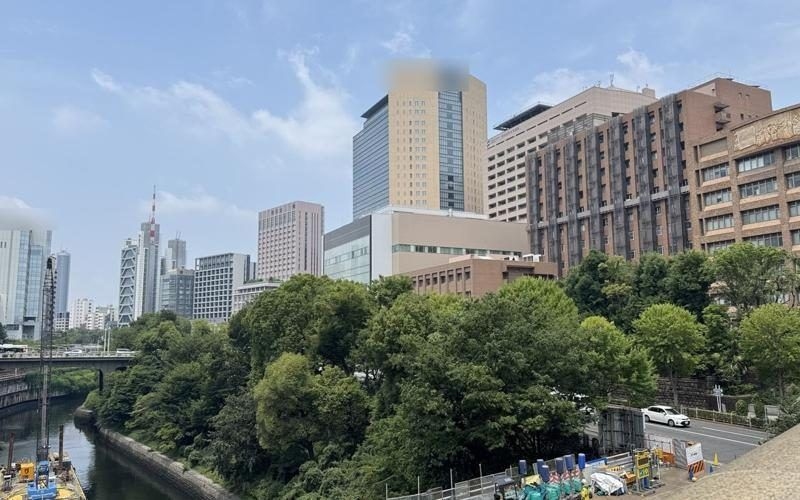
2026年11月
共用部の電気使用量が高止まりしている場合、省エネ診断によって廊下・エントランスの照明LED化、ポンプのインバーター化、エレベーター制御のアップデートなどの改修候補が洗い出せます。初期投資額と年間削減額から求める「単純回収年数」が5〜8年以内であれば優先度が高い施策といえます。管理組合への提案時は削減額の試算を具体的な数字で示すことが合意形成の鍵です。
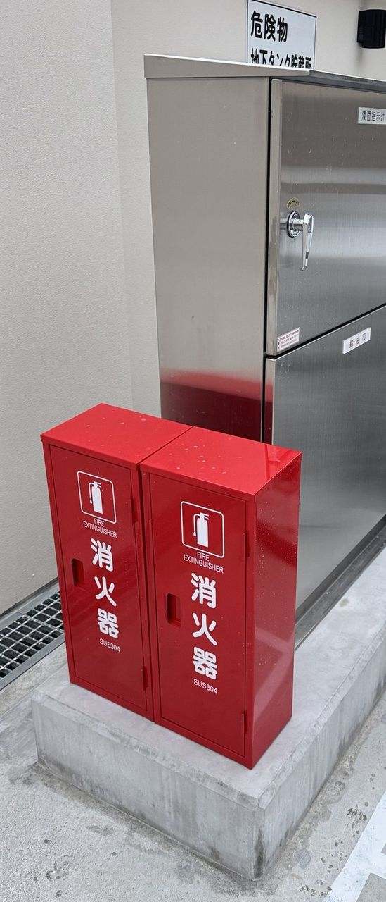
2026年11月
受電電圧6kV以上の自家用電気工作物を保有する施設では、電気事業法に基づく電気主任技術者の選任（または保安管理業務の外部委託）が義務です。管理会社が押さえるべき点は
①電力会社との受電開始時に選任届出が完了しているか、
②年次点検の実施と電力会社への保安規程の届出状況、
③選任技術者の退職・交代時の手続き遅延リスクです。外部委託（保安協会等への委託）の場合は委託契約書と実施記録の保管が管理組合対応の基本になります。
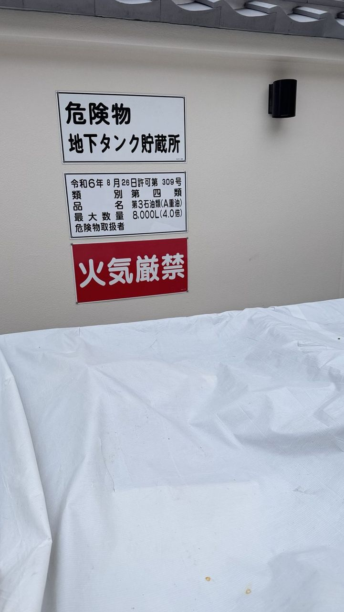
2026年11月
大規模マンションや商業ビルでは防災備蓄品（備蓄食料・飲料水・簡易トイレ・救急セット等）の維持管理が管理組合・オーナーの義務となるケースがあります。期限切れを防ぐには更新月の3ヶ月前に一覧表でリストアップし、入替え発注から搬入完了までのスケジュールを管理会社が主導することが重要です。更新品の費用を修繕積立金から充当する場合は、管理組合総会での予算計上が必要なため、年1回の定期点検結果を次年度予算に反映させるサイクルを確立してください。

2026年10月
マンションや商業ビルのエントランスに設置された自動ドアは、センサー感知精度の低下・レールの磨耗・ドアエンジンの異音が点検時によく見つかる不具合です。
①センサー感知範囲の動作確認、
②開閉速度と停止精度の測定、
③手動切替時の動作確認の3項目を定期的に実施することで、突然の故障や入居者の挟まれ事故を未然に防げます。
2026年10月
電気温水器の法定耐用年数は15年ですが、現場では10〜12年経過した時点で水漏れや保温効率の低下が顕在化するケースが多く見られます。ガス給湯器は燃焼不良や点火不具合の兆候が出始めたら即時交換を検討すべきで、交換費用は機種・号数によって15万〜40万円程度が目安です。計画的な更新工事を大規模修繕計画に組み込むことで急な支出を抑えられます。

2026年10月
コインランドリー機器の洗濯槽内壁には石鹸カスや繊維くずが蓄積しやすく、放置すると洗浄力低下や悪臭の原因になります。メーカー推奨は月1回のドラム内清掃と3ヶ月ごとの槽洗浄剤による内部洗浄が基本で、排水パッキンのヌメリ確認もあわせて実施することで衛生トラブルを防げます。清掃記録を残すことで次回の保守委託業者への引き継ぎもスムーズになります。